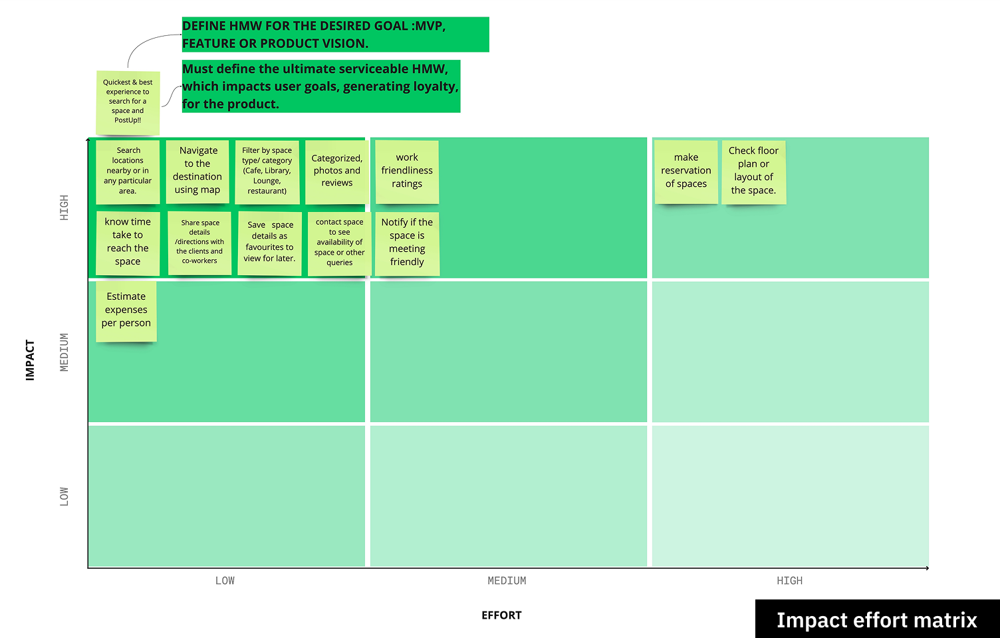
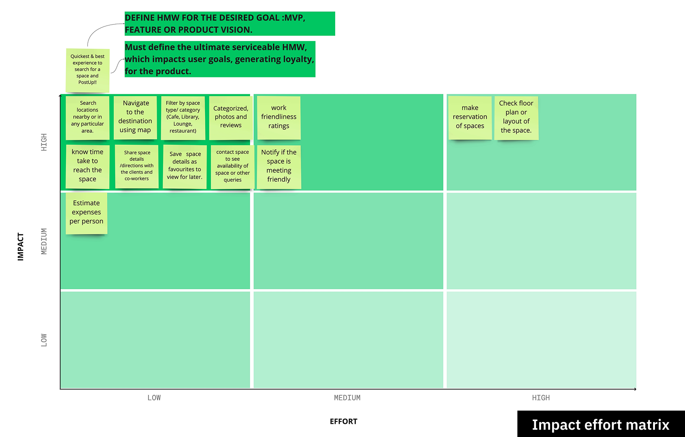
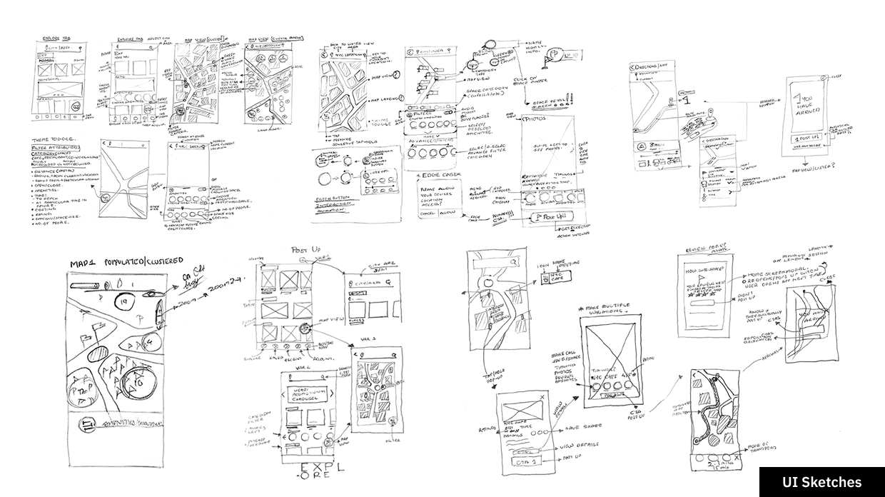
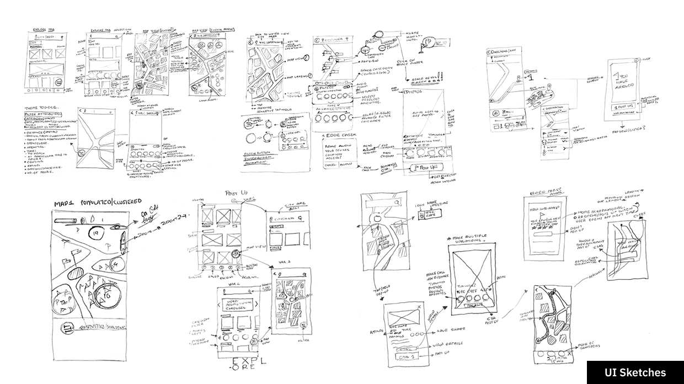

Space locator - mobile application
Post up
Role
IC Product designer
My contribution
As the sole product designer, led the end-to-end design process, ensuring user needs guided every decision.Synthesized research into personas, affinity maps, and "How Might We" statements to define challenges and streamline the design direction.
Facilitated ideation using the Value Proposition Canvas and Impact-Effort Matrix, balancing user impact with feasibility. By mapping workflows, sketching UI concepts, and structuring the app’s information architecture, I established a strong foundation for development.
Created wireframes, built an interactive prototype, and conducted usability tests with five users. Documented usability feedback and proposed solutions to address key friction points.
Key outcomes
The project successfully delivered a user-centric solution with a clear MVP scope and an intuitive design framework. Early testing validated key design decisions, reducing potential usability issues before development. My contributions helped create a scalable foundation, ensuring the product aligned with both user needs and business goals.
Overview & approach
Assignment overview
PostUp is a new startup where freelancers and remote workers share tips and advice. Recently, it has seen lots of feedback and discussions about how to find good public spaces to work. Hence they want to make it easier for freelancers and remote workers to find great public places to work from.
The project constrains were as follows:
- Solution should be designed as a mobile application.
- Help users find places that already exist.
- Charge users a monthly fee of $5.99 in exchange for access to PostUp information.
Projects
1
Mobile application
Design team
1
IC Product designer
Phase#1
Synthesising research
Persona
Developed detailed personas based on user research to represent key audience segments, helping guide design decisions with a user-centric approach.
Affinity Map
Organized qualitative research insights into clusters, identifying patterns in user behavior, pain points, and expectations to uncover key opportunities.
HMW - How might we statements
Translated research findings into actionable "How Might We" questions to frame design challenges and inspire innovative solutions.
Phase#2
Ideate and prioritise
 

Value proposition canvas
Mapped user needs, pain points, and gains against the product’s value proposition to align business goals with user expectations and brainstorm ideas.
Impact effort matrix
Evaluated and prioritized ideas based on their potential impact versus implementation effort, ensuring focus on high-value, feasible solutions.
Phase#3
User mapping & UI sketches
 

User mapping
Mapped out different ways users might interact with the product, ensuring a seamless and intuitive experience.
UI sketches
Created multiple UI sketches to visualize potential design solutions, encouraging iterative feedback and alignment among stakeholders.
Phase#4
Mind mapping & MVP scope
Mind map
Used a mind mapping exercise to define the app’s structure, ensuring logical content organization and easy navigation.
MVP scope
Identified core features and functionalities essential for the minimum viable product (MVP), balancing business objectives and user needs.
Phase#5
Wire framing & prototyping

Wire-framing
Designed wireframes based on MVP scope, defining layout, hierarchy, and interactions to create a clear visual representation of the product.
Prototyping
Developed a high-fidelity interactive prototype to simulate user flows and gather early feedback for iteration before development.
Phase#6
Usability testing & findings
Scope, prepare & conduct usability testing
Conducted usability tests with five users to evaluate ease of use, uncover friction points, and validate design decisions.
Document findings
Synthesized usability test results into actionable insights, highlighting areas for refinement and improvement.
Growth & learnings
User-Centered Validation
Strengthened my ability to assess design effectiveness through usability testing, ensuring user feedback directly informed potential improvements.
Structured Documentation
Enhanced my skills in documenting usability insights and proposing actionable solutions, making it easier for teams to refine the product.
Balancing Feasibility & Impact
Gained deeper experience in using prioritization frameworks like the Impact-Effort Matrix to align user needs with development constraints.
Workflow & Information Architecture
Learned how to refine user workflows and structure app information to support scalability and ease of use.
Design Communication
Improved my ability to translate research findings and usability test results into clear, concise recommendations for decision-making.
Independent Ownership
Developed stronger confidence in leading the design validation process independently, reinforcing adaptability and problem-solving in a fast-paced environment.
Contact me
abhishek.taware.at@gmail.com
I’m always open to collaboration when time allows!
Currently, I work as a Sr. UX Designer at IBM iX, crafting
seamless experiences for users while delivering impactful outcomes
for businesses.
Schedule a call →
You can also look me up on